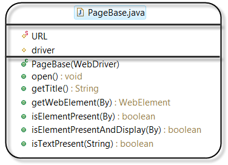
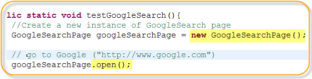
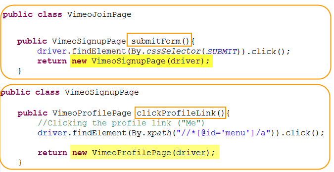

Press Spacebar or Tab To Get Started
To view this presentation please use the latest Firefox, Chrome, or Safari browser.
This project is inspired by:
Ben Burton's WebDriver Best Practices
Dave Justin’s page object post
James Cox's Using Page Objects
Reduces the amount of duplicated code.
Encapsulate the internal state of a page into a single page object.
UI changes only affect to a single Page Object, not to the actual test codes.
Code re-use: Able to use the same page object in a variety of tests cases.
PageBase class provides the base structure and properties of a page object to extend.
1. When you're simulating having the user enter a new URL into the URL bar of the browser, then it's the responsibility of the test class to create the page object it needs.
2. some operation on the page that would cause the browser to point to another page -- for example, clicking a link or submitting a form -- then it's the responsibility of that page object to return the next page object.
Project Home: https://github.com/ChonC/wtbox
wiki: https://github.com/ChonC/wtbox/wiki
PageBase source code
Page Objects test example
Thank you!
Chon Chung - @chon_chung